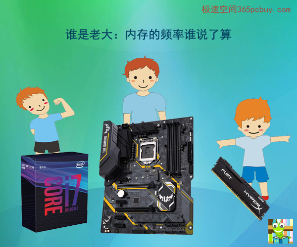
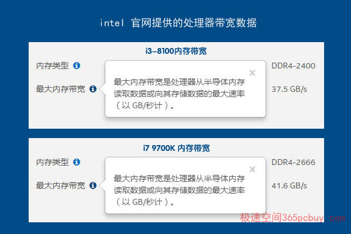
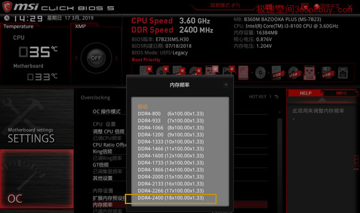
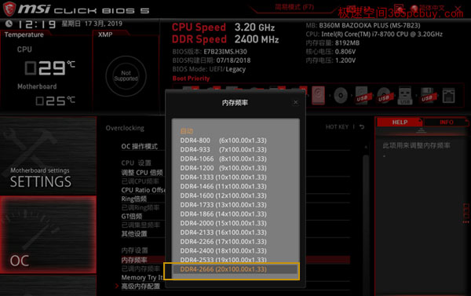
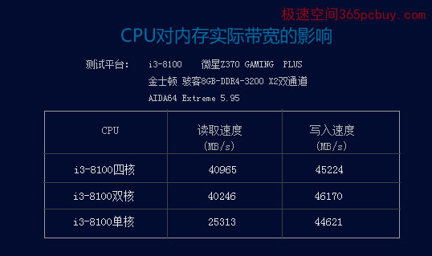

文章标题
发表时间：2019-11-10 文章浏览次数：2165 作者：pc大湿
此文发表于2019年4月16日
前言：
内存频率、内存带宽、内存速度、内存控制器......这些专业词语不少读者已经耳熟能详，但如果再深入一些，如：CPU的内存控制器会限制内存频率吗？可能就不是所有人都能答上来了，对于没有任何基础的初学者，这样的问题足以把人弄得七荤八素，到了东南找不到西北。
今天我们就试图梳理一下它们的关系，去探索这个问题：内存的频率到底是谁说了算，是CPU还是主板？
此文涉及一些专业知识，比较枯燥，快速阅读只需看文中的结论（绿色文字）即可。
正文
不少用户选好了CPU、主板、显卡，遇到内存卡壳了。
B360主板上写的支持DDR4-2666，i3-8100的内存控制器是DDR4-2400的，那买2666有用么？
Z370主板可以支持DDR4-4133，但i7-8700K、i7-9700K 支持的最高内存规格是DDR4-2666，那会有瓶颈吗，买高频内存行不行呢？

图一
内存的频率听谁的话？是CPU、主板还是内存自己
确实，看intel 官网介绍，i3-8100支持的最大内存频率为DDR4-2400，第八代九代酷睿i5\i7\i9（如i7-8700K，i7-9700K、i9-9900K等），其支持的最大内存频率是DDR-2666。

图二
内存带宽是内存在单位时间内读取/存储数据的数据量（速率），通俗的说法就是内存速度。
内存带宽和现实中的高速公路类似，每秒能通行的汽车数量。车道越多，车速越快，那么通车能力越大。
可将内存位宽看做高速路上的车道，64bit相当于64车道。
可将内存频率看做汽车的速度
则有内存带宽公式：
内存带宽=内存等效频率X内存位宽/8
（注：此公式为内存带宽的理论最大值）
由于DDR\DDR2\DDR3\DDR4的内存位宽均为64bit
因此：
单通道DDR4-2400内存带宽=2400X64/8=19200MB/s=19.2GB/s
双通道则为：19.2X2=38.4GB/s
仔细的读者对照图二，发现不对了，intel公布的最大带宽是37.5GB/s呢？你算出来是38.4GB/s，难道公式有误？原来，我们常常“偷懒”，把1GB=1000MB，实际1GB=1024MB，准确的是38400/1024=37.5GB/s。有趣的是，如果你有兴趣到intel官网上查看以前的处理器内存带宽，会发现Intel也在“偷懒”。
现在回到这个问题：由于内存控制器在CPU内部，看起来内存的运行速度是CPU说了算，主板要靠边站，既然intel说了i3-8100的最大内存带宽只有37.5GB/s（对应DDR4-2400内存），那买DDR4-2666还有用么？
从表面上看是CPU说了算
常见平台i3-8100+B360M，无论你用哪种内存，BIOS里面最高就只有DDR4-2400（下图）

图三
换用i7-8700，BIOS里面将会有DDR4-2666的选项

图四
从图三和图四看确实有些迷惑性，B360主板支持DDR4-2666，内存也是2666MHZ的，但只能当2400内存使用，换成i7-8700就支持到DDR4-2666了，这看起来内存频率是CPU说了算（由CPU内部的内存控制器决定）。
实际上：
在内存体质允许的情况下，内存的频率是主板说了算。只要主板支持，CPU的内存控制器规格将形同虚设。最大内存带宽仅仅是一个标准，只保证在这个范围内是安全稳定的。超过这个标准当然也是可以的，但如果超速翻车闪了腰，折了腿，就不能到intel公司去要赔偿，不给赔偿还要一哭二闹三上吊，哪个公司都怕，订了标准就分清了责任。
图三和图四，B360主板的BIOS识别到处理器型号后，会遵循intel的规范，允许的内存最高频率为DDR4-2400，因此在BIOS里面是看不到2666的选项，如果换用i5-8400/i7-8700等型号，主板将会允许内存的最高频率为DDR4-2666，其实质还是主板说了算。
在H310/B360平台上，
当内存频率超过CPU的内存控制器标准的，都将会降频（如：i3-8100+B360+DDR4-2666，都会降频到2400使用）。
反之，当内存频率低于CPU内存控制器标准的，则有机会超频（如：i7-8700+B360+DDR4-2400，一般都能超频率到2666使用）。
但是，如果主板允许（如Z370），那么就会出现下面的情况：
内存控制器对内存说：“你去把厨房里的碗洗了！”
内存说：“以前B360任公司总裁的时候，我实际也不归你管，只不过你狐假虎威，颐指气使，我忍了，昨天B360已经被董事会开除了，我直接听命于新任总裁Z370，你还是自己去洗吧！”
此时，即使CPU内存控制器规格小于内存频率，也不会有瓶颈。（注：追求性价比的用户，非高端配置，不能为了超内存频率，去选择昂贵的Z370主板）
实测验证：

图五
测试解读：
1、内存带宽有理论值和实际值之分，实际带宽会小于理论带宽。DDR4-2400双通理论带宽为37.5GB/s，实际读写为32810/1024=32GB/s，35052/1024=34GB/s，达到了理论值的85-90%。
2、随着内存频率的提升，读写速度都随之提升，很快，在达到DDR4-2933的时候，读写均超过了i3-8100规定37.5GB/s，之后一路上升，完全无视安全标准。这说明，选购高频内存，无需担心内存控制器会导致瓶颈。
3、在超频4000MHZ的时候，将标准电压提升到了1.4V，为了达到4133MHZ的主板允许极限，更是将电压提升到了1.47V，警告：超过1.4V后，电压值会变成红色，内存损坏的风险大大增加。

图六
超频到DDR4-4133后，内存的读、写和复制性能都远远超出了intel i3-8100内存控制器规格。现在的BIOS都聪明，只需调整DRAM电压，BIOS将自动帮你调试CPU SA/IO电压，并且帮你自动适配内存时序。（图六下面的红框中，可以看到内存时序增大了）
CPU英雄气短，对内存实际带宽影响甚微
CPU不服气了，什么，我的话谁敢不听？实际上，也不能说和CPU完全无关，虽然内存频率是主板说了算，但CPU的的性能不能过于低下，否则内存的实际带宽将受到严重局限（但并不影响理论值）。
实测验证：

图七
测试解读：
将i3-8100关闭两个核心，模拟成高频赛扬，内存实际带宽也不会明显下降，而目前处理器的最低档次就是赛扬双核。只有降低到单核的时候，CPU成为严重瓶颈，内存读取速度像断线的风筝一般掉下来，可见，假设CPU不高兴要怠工，导致严重的瓶颈，那主板把内存频率支持到再高也没用。但是，现在已经没有单核。
内存频率是主板说了算的根本原因
内存本身不能产生频率，其频率源泉来至于主板上的时钟发生器。如果CPU是大脑，时钟发生器则相当于心脏，它产生的数字脉冲信号震荡才让电脑“活”了起来，CPU、内存、总线的频率都来至于时钟发生器。部分型号的CPU内置了时钟发生器供自己使用，但内存频率仍然来至于主板上的时钟发生器（目前很多集成在主板的PCH芯片组内）。因此，内存的工资都是主板发，它当然是听命于主板，而实测证明，CPU的内存控制器不会把内存频率控制住，它并没有权利克扣内存的工资。
注：我们常说的内存频率，通常是指内存的等效频率，如DDR4-3200，其等效频率是3200MHz，但内存等效频率并不是内存核心频率和工作频率，此非本文内容，且略过。
如您想进一步了解内存带宽对电脑性能的影响，可阅读【K先生攀岩三部曲】
【K先生攀岩三部曲】
第一部：绝壁四千尺，手抖恐闪失：高频内存再超频，探索内存性价比（intel核显平台）
第二部：一阵表演猛如虎，一看门票收入2元5 ：探索双通道高频内存性价比（intel独显平台）
第三部：单枪匹马入沙场，双剑合璧霸天下：探索双通道高频内存性价比（AMD独显平台）